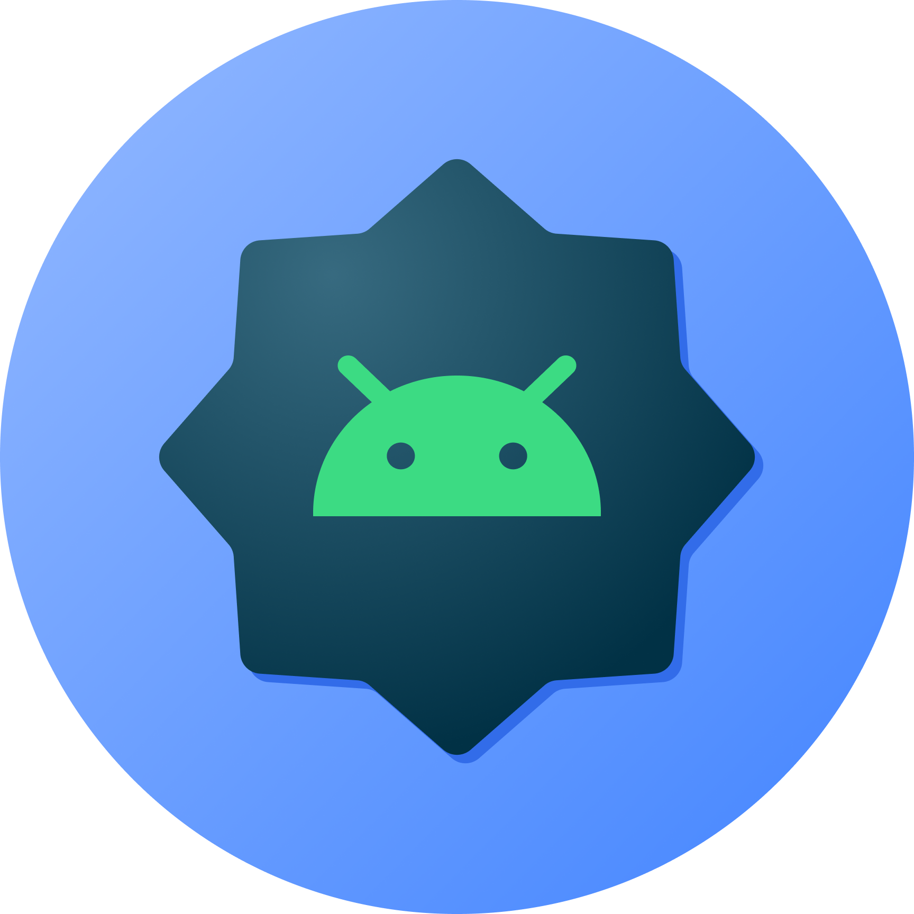

C++, Python, Linux
C++ Developer | Server Administrator | Infrastructure Engineer
Building Robust Apps.
Scaling Reliable Systems.
I build robust C++ applications and manage dependable networks, servers, and infrastructure systems.
Based in Bangladesh, I combine modern C++ development with hands-on server administration and network engineering. I focus on system-level problem solving, automation, and infrastructure uptime.
- C++ Developer & System-level programmer
- Server Administrator & Infrastructure Engineer
- 3+ years in Network & IT Operations
Systems & Development
Robust software, reliable infrastructure.
About
Reliable infrastructure support with a builder's mindset.
I am a C++ Developer and Infrastructure Engineer with experience in software development, server administration, and network operations. I specialize in building efficient systems and maintaining high-availability infrastructure using Linux, MikroTik, and virtualization technologies.
- Developing software using C++ with a focus on system-level problem solving and debugging at BFIN IT.
- Managing server infrastructure, including VPS, ticketing systems, and Linux-based security systems at Joy Cinemas.
- Configured and maintained MikroTik and Cisco network environments for day-to-day connectivity and subscriber support.
- Expertise in virtualization (Proxmox VE, VMware) and containerization (Docker) for modern infrastructure deployment.
VPS, CCTV, monitoring
Systems & Security
Server and VPS administration, CCTV rollout support, backup awareness, access control, and operational hygiene.MikroTik, Cisco, LAN/WAN
Network Operations
Monitoring, routing, switching, hotspot support, MikroTik configuration, Cisco basics, and practical network troubleshooting.Skills
Technical Expertise
Active focus
C++ Development
Develop system-level software, debug complex issues, and optimize application performance at BFIN IT.Core strength
Server & VPS Administration
Manage Linux servers, Proxmox VE, VMware, and cloud infrastructure with a focus on uptime.Core strength
Network Operations
Maintain connectivity, MikroTik/Cisco configuration, and LAN/WAN infrastructure.Daily operations
Technical Support
Resolve hardware/software issues and maintain clear documentation for IT workflows.Field work
CCTV Systems
Install, configure, and maintain surveillance systems and remote viewing paths.Everyday tools
Linux & Windows
Expertise in deploying and troubleshooting both desktop and server environments.Projects
Projects
MikroTik Hotspot Manager
A Flask and Telegram automation project for hotspot user provisioning, profile sync, payment approval, and expired-account cleanup without repeating manual WinBox work.
Result
Reduces repetitive account management and makes support actions available from a simple bot workflow.
PythonFlaskTelegram BotMikroTik
View on GitHub
Community Savings Platform
A full-stack monorepo for savings groups, covering deposits, dues, CSV exports, authentication, and role-based workflows across API, web, and mobile clients.
Result
Turns group finance tasks into a structured workflow with clearer records and easier reporting.
ExpressViteExpoCSV Export
Explore monorepo

ShareBuddy Android Share Target
A Jetpack Compose app that intercepts Android shares, normalizes links, queues reminders, and can be built from Ubuntu through CLI tooling.
Result
Makes shared links easier to capture, organize, and return to later from an Android workflow.
AndroidKotlinComposeCLI Build
See the app
Experience
Where the work shows up
April 2026 – Present New
C++ Developer
BFIN IT- Leading software development initiatives using C++.
- Specializing in debugging and solving complex system-level problems.
- Contributing to the development of robust and efficient software applications.
July 2024 – Present
IT Executive / Server Administrator
Joy Cinemas- Managing server infrastructure including VPS, ticketing software, and system maintenance.
- Ensuring smooth operation of Linux-based servers and security systems.
- Configuring and monitoring networking, CCTV systems, and IT hardware.
Sep 2022 – Jul 2024
Assistant Network Engineer
ALO Communication- Managed home user network infrastructure and provided technical support.
- Configured routers, switches, and firewall security for high availability.
- Assisted in server maintenance and critical updates at the head office.
Expected 2029
BSc in Computer Science & Engineering
University of South Asia- Building stronger foundations in software, systems, databases, networking, and problem solving.
- Applying study directly through automation, full-stack projects, and Linux-based workflows.
Contact
Let's make the next system easier to run.
For C++ development, server admin, network support, or infrastructure-focused roles, email is the best first step.